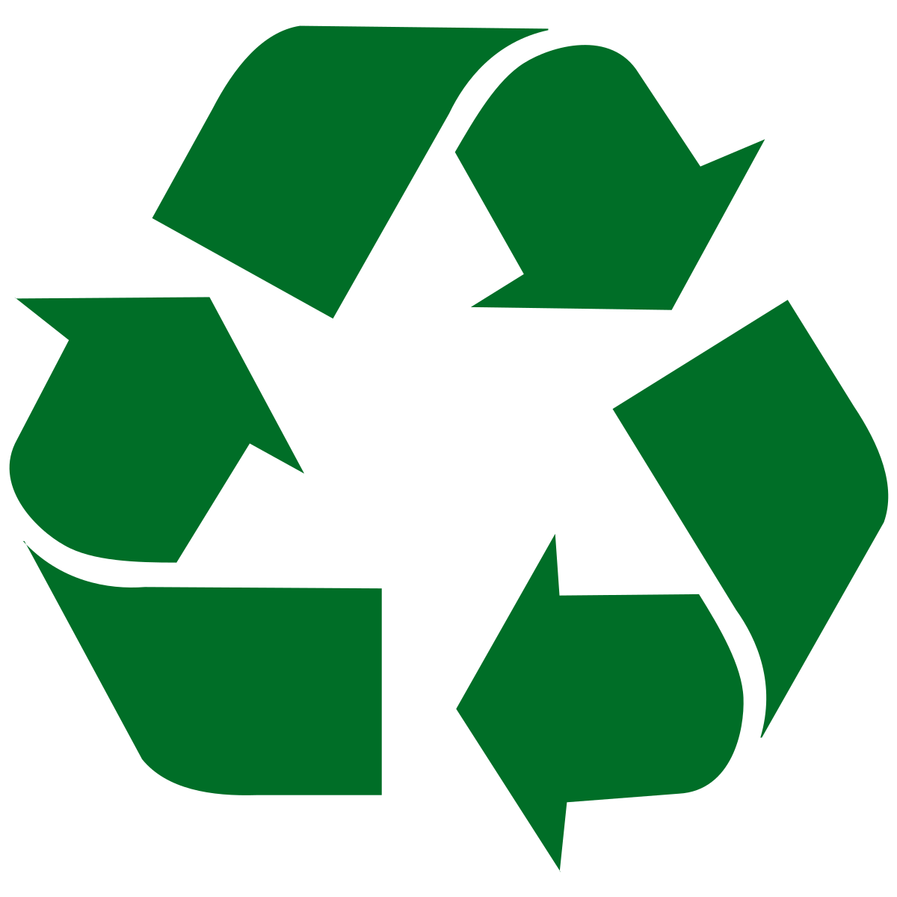

Logo :
 Triman : Le produit doit être trié ou rapporté dans un point de collecte pour être recyclé.
Triman : Le produit doit être trié ou rapporté dans un point de collecte pour être recyclé.
Triangle de Moebius : Le produit ou l'emballage est techniquement recyclable.
 Consignes info-tri : Signalitique visant à rendre plus claires les consignes de tri.
Consignes info-tri : Signalitique visant à rendre plus claires les consignes de tri.
 Poubelle barrée : les déchets qui ont ce symbole doivent être collecté séparément.
Poubelle barrée : les déchets qui ont ce symbole doivent être collecté séparément.
Attention !
 Point vert : Indique tout simplement que l'entreprise est partenaire du programme français de valorisation des emballages ménagers.
Point vert : Indique tout simplement que l'entreprise est partenaire du programme français de valorisation des emballages ménagers.
 Tidyman : Incite les consommateurs à jeter leur dechet dans une poubelle.
Tidyman : Incite les consommateurs à jeter leur dechet dans une poubelle.
Le recyclage de dechets permet de les transformer en de nouveau produits :
- avec 27 bouteilles en plastique, on peut fabriquer un pull polaire
- avec 4 briques de lait, on peut fabriquer un rouleau de papier toilettes
- 2kg de canettes en alluminium, on peut fabriquer une trotinette
Le recyclage des dechets permet d'économiser des matières premières comme le bois ou le pétrole. Ainsi, le recyclage peu tprotéger la nature.
On peut économiser du pétrole en recyclent des bouteilles et flacons en plastique.
On peut économiser du bois en recyclent du cartons, papier et briques alimentaires.
On peut économiser du fer et de la bauxite en recyclent des canettes, boites de conserves, bombes aérosol en acier ou en aluminium.
On peut économiser du sable silicieux en recyclent des bouteilles, bocaux et pots en verre.
 Poubelle verte : Le verre (sans les bouchons de plastique)
Poubelle verte : Le verre (sans les bouchons de plastique) Poubelle bleu : Le papier, les journeaux, les annuaires, les prospectus
Poubelle bleu : Le papier, les journeaux, les annuaires, les prospectus